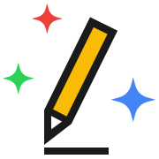
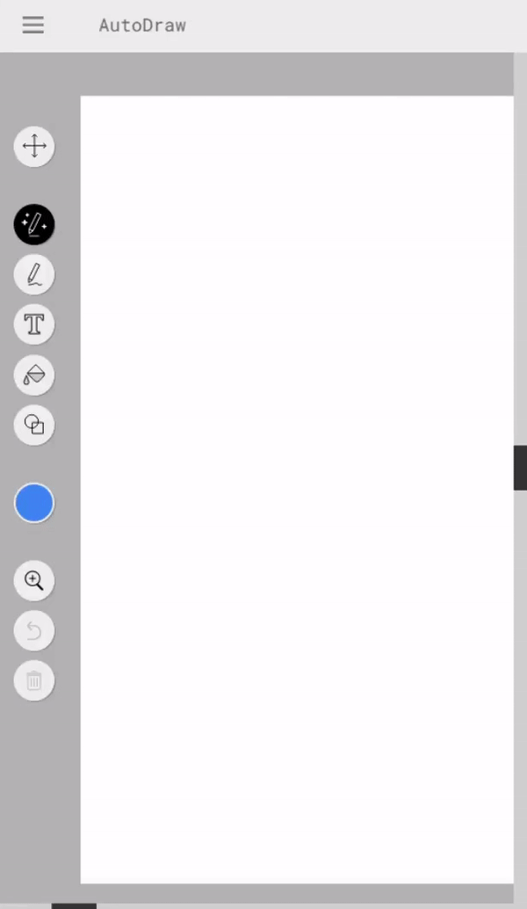

Google Autodraw
Google Autodraw - це інструмент, який допомагає художникам швидко створювати векторні малюнки за допомогою нейромережі. Користувач може почати малювати на полотні, а Autodraw буде пропонувати варіанти векторних малюнків.


Як почати використовувати Google Autodraw?
Для того, щоб почати використовувати Google Autodraw, вам потрібно лише перейти на їхній сайт autodraw.com
Доречі, у них є і браузерна гра, в якій нейромережа повинна вгадати що ви малюєте, і називається вона "Quick, Draw!".